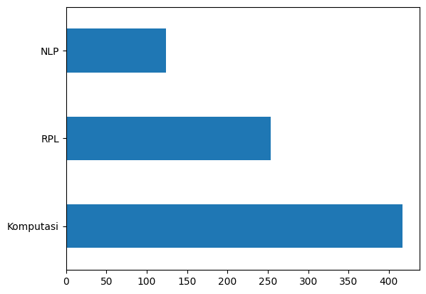

UTS - Klasifikasi Abstrak PTA#
from google.colab import drive
drive.mount('/content/drive')
KeyboardInterruptTraceback (most recent call last)
<ipython-input-1-d5df0069828e> in <cell line: 2>()
1 from google.colab import drive
----> 2 drive.mount('/content/drive')
/usr/local/lib/python3.9/dist-packages/google/colab/drive.py in mount(mountpoint, force_remount, timeout_ms, readonly)
101 def mount(mountpoint, force_remount=False, timeout_ms=120000, readonly=False):
102 """Mount your Google Drive at the specified mountpoint path."""
--> 103 return _mount(
104 mountpoint,
105 force_remount=force_remount,
/usr/local/lib/python3.9/dist-packages/google/colab/drive.py in _mount(mountpoint, force_remount, timeout_ms, ephemeral, readonly)
130 )
131 if ephemeral:
--> 132 _message.blocking_request(
133 'request_auth', request={'authType': 'dfs_ephemeral'}, timeout_sec=None
134 )
/usr/local/lib/python3.9/dist-packages/google/colab/_message.py in blocking_request(request_type, request, timeout_sec, parent)
175 request_type, request, parent=parent, expect_reply=True
176 )
--> 177 return read_reply_from_input(request_id, timeout_sec)
/usr/local/lib/python3.9/dist-packages/google/colab/_message.py in read_reply_from_input(message_id, timeout_sec)
95 reply = _read_next_input_message()
96 if reply == _NOT_READY or not isinstance(reply, dict):
---> 97 time.sleep(0.025)
98 continue
99 if (
KeyboardInterrupt:
import numpy as np
import pandas as pd
Load Data Abstrak#
df = pd.read_excel('/content/drive/MyDrive/prosainsdata/LabeledPtaFix.xlsx')
# df = df.drop(['Unnamed: 0.1'], axis=1)
df.head()
| NIM | Nama | Judul | Abstrak | Kelas | |
|---|---|---|---|---|---|
| 0 | 40411100468 | A.Ubaidillah S.Kom | PERANCANGAN DAN IMPLEMENTASI SISTEM DATABASE T... | Sistem informasi akademik (SIAKAD) merupaka... | RPL |
| 1 | 40411100476 | M. Basith Ardianto, | APLIKASI KONTROL DAN MONITORING JARINGAN KOMPU... | Berjalannya koneksi jaringan komputer dengan l... | RPL |
| 2 | 70411100070 | Heri Supriyanto | SISTEM PENDUKUNG KEPUTUSAN OPTIMASI PENJADWALA... | Penjadwalan kuliah di Perguruan Tinggi me... | Komputasi |
| 3 | 80411100115 | Septian Rahman Hakim | SISTEM AUGMENTED REALITY ANIMASI BENDA BERGERA... | Seiring perkembangan teknologi yang ada diduni... | Komputasi |
| 4 | 70411100007 | Adi Chandra Laksono | Gerak Pekerja Pada Game Real Time Strategy Men... | Gerak pekerja ada pada game yang memiliki genr... | RPL |
Eksplorasi Data#
df.isnull().sum()
NIM 0
Nama 0
Judul 0
Abstrak 3
Kelas 0
dtype: int64
df.dropna(inplace=True)
df.isnull().sum()
NIM 0
Nama 0
Judul 0
Abstrak 0
Kelas 0
dtype: int64
df.count()
NIM 795
Nama 795
Judul 795
Abstrak 795
Kelas 795
dtype: int64
df.tail()
| NIM | Nama | Judul | Abstrak | Kelas | |
|---|---|---|---|---|---|
| 793 | 160411100032 | Rachmad Agung Pambudi | PENERAPAN ALGORITMA LONG-SHORT TERM MEMORY UNT... | Investasi saham selama ini memiliki resiko ker... | NLP |
| 794 | 160411100182 | Nadila Hidayanti | SISTEM PENCARIAN TEKS AL-QURAN TERJEMAHAN BERB... | Information Retrieval (IR) merupakan pengambil... | Komputasi |
| 795 | 160411100077 | Afni Sakinah | KLASIFIKASI KOMPLEKSITAS VISUAL CITRA SAMPAH M... | Klasifikasi citra merupakan proses pengelompok... | Komputasi |
| 796 | 160411100084 | Friska Fatmawatiningrum | IDENTIFIKASI BINER ATRIBUT PEJALAN KAKI MENGGU... | Identifikasi atribut pejalan kaki merupakan sa... | NLP |
| 797 | 160411100044 | Dian Wibowo | DETEKSI OBJEK MANUSIA BERBASIS ONE STAGE DETEC... | Topik deteksi objek telah menarik perhatian ya... | Komputasi |
# Jumlah data pada masing-masing label
df['Kelas'].value_counts()
Komputasi 417
RPL 254
NLP 124
Name: Kelas, dtype: int64
import matplotlib.pyplot as plt
df['Kelas'].value_counts().plot(kind='barh')
plt.show()

Prepocessing#
Cleaning Text#
import re, string
# Text Cleaning
def cleaning(text):
# HTML Tag Removal
text = re.compile('<.*?>|&([a-z0-9]+|#[0-9]{1,6}|#x[0-9a-f]{1,6});').sub('', str(text))
# Case folding
text = text.lower()
# Trim text
text = text.strip()
# Remove punctuations, karakter spesial, and spasi ganda
text = re.compile('<.*?>').sub('', text)
text = re.compile('[%s]' % re.escape(string.punctuation)).sub(' ', text)
text = re.sub('\s+', ' ', text)
# Number removal
text = re.sub(r'\[[0-9]*\]', ' ', text)
text = re.sub(r'[^\w\s]', '', str(text).lower().strip())
text = re.sub(r'\d', ' ', text)
text = re.sub(r'\s+', ' ', text)
# Mengubah text 'nan' dengan whitespace agar nantinya dapat dihapus
text = re.sub('nan', '', text)
return text
df['Judul'] = df['Judul'].apply(lambda x: cleaning(x))
df['Abstrak'] = df['Abstrak'].apply(lambda x: cleaning(x))
df.head()
| NIM | Nama | Judul | Abstrak | Kelas | |
|---|---|---|---|---|---|
| 0 | 40411100468 | A.Ubaidillah S.Kom | perancangan dan implementasi sistem database t... | sistem informasi akademik siakad merupakan sis... | RPL |
| 1 | 40411100476 | M. Basith Ardianto, | aplikasi kontrol dan monitoring jaringan kompu... | berjalannya koneksi jaringan komputer dengan l... | RPL |
| 2 | 70411100070 | Heri Supriyanto | sistem pendukung keputusan optimasi penjadwala... | penjadwalan kuliah di perguruan tinggi merupak... | Komputasi |
| 3 | 80411100115 | Septian Rahman Hakim | sistem augmented reality animasi benda bergera... | seiring perkembangan teknologi yang ada diduni... | Komputasi |
| 4 | 70411100007 | Adi Chandra Laksono | gerak pekerja pada game real time strategy men... | gerak pekerja ada pada game yang memiliki genr... | RPL |
# Export Hasil Cleaning
df.to_csv('pta-cleaned.csv')
Hilangkan Value yang Kosong#
# Ubah empty string menjadi NaN value
df = df.replace('', np.nan)
# Cek missing values
df.isnull().sum()
NIM 0
Nama 0
Judul 0
Abstrak 2
Kelas 0
dtype: int64
# Remove missing values
df.dropna(inplace=True)
len(df)
793
Menghilangkan Duplikasi Data#
# Cek apakah terdapat duplikasi data pada kolom judul
df[df['Judul'].duplicated()]
| NIM | Nama | Judul | Abstrak | Kelas | |
|---|---|---|---|---|---|
| 673 | 120411100015 | Abdul Ainur Rofik | sistem pendukung keputusan pemilihan pemain bo... | peningkatan pembinaan permai bola voli terutam... | Komputasi |
# Remove duplicates judul
df.drop_duplicates(subset=['Judul'], inplace=True)
# Cek apakah masih terdapat duplikasi data pada kolom judul
df[df['Judul'].duplicated()]
| NIM | Nama | Judul | Abstrak | Kelas |
|---|
# Cek apakah terdapat duplikasi data pada kolom abstrak
df[df['Abstrak'].duplicated()]
| NIM | Nama | Judul | Abstrak | Kelas |
|---|
# Hiilangkan duplikasi abstrak
df.drop_duplicates(subset=['Abstrak'], inplace=True)
# Cek apakah masih terdapat duplikasi data pada kolom abstrak
df[df['Abstrak'].duplicated()]
| NIM | Nama | Judul | Abstrak | Kelas |
|---|
# Export Hasil Preprocessing
df.to_csv('preprocessed-pta.csv')
Tokenisasi#
import nltk
nltk.download('popular')
[nltk_data] Downloading collection 'popular'
[nltk_data] |
[nltk_data] | Downloading package cmudict to /root/nltk_data...
[nltk_data] | Unzipping corpora/cmudict.zip.
[nltk_data] | Downloading package gazetteers to /root/nltk_data...
[nltk_data] | Unzipping corpora/gazetteers.zip.
[nltk_data] | Downloading package genesis to /root/nltk_data...
[nltk_data] | Unzipping corpora/genesis.zip.
[nltk_data] | Downloading package gutenberg to /root/nltk_data...
[nltk_data] | Unzipping corpora/gutenberg.zip.
[nltk_data] | Downloading package inaugural to /root/nltk_data...
[nltk_data] | Unzipping corpora/inaugural.zip.
[nltk_data] | Downloading package movie_reviews to
[nltk_data] | /root/nltk_data...
[nltk_data] | Unzipping corpora/movie_reviews.zip.
[nltk_data] | Downloading package names to /root/nltk_data...
[nltk_data] | Unzipping corpora/names.zip.
[nltk_data] | Downloading package shakespeare to /root/nltk_data...
[nltk_data] | Unzipping corpora/shakespeare.zip.
[nltk_data] | Downloading package stopwords to /root/nltk_data...
[nltk_data] | Unzipping corpora/stopwords.zip.
[nltk_data] | Downloading package treebank to /root/nltk_data...
[nltk_data] | Unzipping corpora/treebank.zip.
[nltk_data] | Downloading package twitter_samples to
[nltk_data] | /root/nltk_data...
[nltk_data] | Unzipping corpora/twitter_samples.zip.
[nltk_data] | Downloading package omw to /root/nltk_data...
[nltk_data] | Downloading package omw-1.4 to /root/nltk_data...
[nltk_data] | Downloading package wordnet to /root/nltk_data...
[nltk_data] | Downloading package wordnet2021 to /root/nltk_data...
[nltk_data] | Downloading package wordnet31 to /root/nltk_data...
[nltk_data] | Downloading package wordnet_ic to /root/nltk_data...
[nltk_data] | Unzipping corpora/wordnet_ic.zip.
[nltk_data] | Downloading package words to /root/nltk_data...
[nltk_data] | Unzipping corpora/words.zip.
[nltk_data] | Downloading package maxent_ne_chunker to
[nltk_data] | /root/nltk_data...
[nltk_data] | Unzipping chunkers/maxent_ne_chunker.zip.
[nltk_data] | Downloading package punkt to /root/nltk_data...
[nltk_data] | Unzipping tokenizers/punkt.zip.
[nltk_data] | Downloading package snowball_data to
[nltk_data] | /root/nltk_data...
[nltk_data] | Downloading package averaged_perceptron_tagger to
[nltk_data] | /root/nltk_data...
[nltk_data] | Unzipping taggers/averaged_perceptron_tagger.zip.
[nltk_data] |
[nltk_data] Done downloading collection popular
True
from nltk.tokenize import word_tokenize
# Tokenizing Judul
df['judul_tokens'] = df['Judul'].apply(lambda x: word_tokenize(x))
df[["Judul", "judul_tokens"]].head()
| Judul | judul_tokens | |
|---|---|---|
| 0 | perancangan dan implementasi sistem database t... | [perancangan, dan, implementasi, sistem, datab... |
| 1 | aplikasi kontrol dan monitoring jaringan kompu... | [aplikasi, kontrol, dan, monitoring, jaringan,... |
| 2 | sistem pendukung keputusan optimasi penjadwala... | [sistem, pendukung, keputusan, optimasi, penja... |
| 3 | sistem augmented reality animasi benda bergera... | [sistem, augmented, reality, animasi, benda, b... |
| 4 | gerak pekerja pada game real time strategy men... | [gerak, pekerja, pada, game, real, time, strat... |
# Tokenizing Abstrak
df['abstrak_tokens'] = df['Abstrak'].apply(lambda x: word_tokenize(x))
df[["Abstrak", "abstrak_tokens"]].head()
| Abstrak | abstrak_tokens | |
|---|---|---|
| 0 | sistem informasi akademik siakad merupakan sis... | [sistem, informasi, akademik, siakad, merupaka... |
| 1 | berjalannya koneksi jaringan komputer dengan l... | [berjalannya, koneksi, jaringan, komputer, den... |
| 2 | penjadwalan kuliah di perguruan tinggi merupak... | [penjadwalan, kuliah, di, perguruan, tinggi, m... |
| 3 | seiring perkembangan teknologi yang ada diduni... | [seiring, perkembangan, teknologi, yang, ada, ... |
| 4 | gerak pekerja ada pada game yang memiliki genr... | [gerak, pekerja, ada, pada, game, yang, memili... |
Stop Words Removal#
from nltk.corpus import stopwords
from itertools import chain
stop_words = set(chain(stopwords.words('indonesian'), stopwords.words('english')))
df['judul_tokens'] = df['judul_tokens'].apply(lambda x: [w for w in x if not w in stop_words])
df['abstrak_tokens'] = df['abstrak_tokens'].apply(lambda x: [w for w in x if not w in stop_words])
df[["Judul", "judul_tokens"]].head()
| Judul | judul_tokens | |
|---|---|---|
| 0 | perancangan dan implementasi sistem database t... | [perancangan, implementasi, sistem, database, ... |
| 1 | aplikasi kontrol dan monitoring jaringan kompu... | [aplikasi, kontrol, monitoring, jaringan, komp... |
| 2 | sistem pendukung keputusan optimasi penjadwala... | [sistem, pendukung, keputusan, optimasi, penja... |
| 3 | sistem augmented reality animasi benda bergera... | [sistem, augmented, reality, animasi, benda, b... |
| 4 | gerak pekerja pada game real time strategy men... | [gerak, pekerja, game, real, time, strategy, f... |
df[["Abstrak", "abstrak_tokens"]].head()
| Abstrak | abstrak_tokens | |
|---|---|---|
| 0 | sistem informasi akademik siakad merupakan sis... | [sistem, informasi, akademik, siakad, sistem, ... |
| 1 | berjalannya koneksi jaringan komputer dengan l... | [berjalannya, koneksi, jaringan, komputer, lan... |
| 2 | penjadwalan kuliah di perguruan tinggi merupak... | [penjadwalan, kuliah, perguruan, kompleks, per... |
| 3 | seiring perkembangan teknologi yang ada diduni... | [seiring, perkembangan, teknologi, didunia, mu... |
| 4 | gerak pekerja ada pada game yang memiliki genr... | [gerak, pekerja, game, memiliki, genre, rts, r... |
Stemming Data#
!pip install sastrawi
Looking in indexes: https://pypi.org/simple, https://us-python.pkg.dev/colab-wheels/public/simple/
Collecting sastrawi
Downloading Sastrawi-1.0.1-py2.py3-none-any.whl (209 kB)
━━━━━━━━━━━━━━━━━━━━━━━━━━━━━━━━━━━━━━━ 209.7/209.7 KB 4.8 MB/s eta 0:00:00
?25hInstalling collected packages: sastrawi
Successfully installed sastrawi-1.0.1
from Sastrawi.Stemmer.StemmerFactory import StemmerFactory
from tqdm.auto import tqdm
tqdm.pandas()
factory = StemmerFactory()
stemmer = factory.create_stemmer()
# Stemming judul
df['judul_tokens'] = df['judul_tokens'].progress_apply(lambda x: stemmer.stem(' '.join(x)).split(' '))
# Hasil stemming judul
df[["Judul", "judul_tokens"]].head()
| Judul | judul_tokens | |
|---|---|---|
| 0 | perancangan dan implementasi sistem database t... | [ancang, implementasi, sistem, database, distr... |
| 1 | aplikasi kontrol dan monitoring jaringan kompu... | [aplikasi, kontrol, monitoring, jaring, komput... |
| 2 | sistem pendukung keputusan optimasi penjadwala... | [sistem, dukung, putus, optimasi, jadwal, mata... |
| 3 | sistem augmented reality animasi benda bergera... | [sistem, augmented, reality, animasi, benda, g... |
| 4 | gerak pekerja pada game real time strategy men... | [gerak, kerja, game, real, time, strategy, fin... |
# Stemming abstrak
df['abstrak_tokens'] = df['abstrak_tokens'].progress_apply(lambda x: stemmer.stem(' '.join(x)).split(' '))
# Hasil stemming abstrak
df[["Abstrak", "abstrak_tokens"]].head()
| Abstrak | abstrak_tokens | |
|---|---|---|
| 0 | sistem informasi akademik siakad merupakan sis... | [sistem, informasi, akademik, siakad, sistem, ... |
| 1 | berjalannya koneksi jaringan komputer dengan l... | [jalan, koneksi, jaring, komputer, lancar, gan... |
| 2 | penjadwalan kuliah di perguruan tinggi merupak... | [jadwal, kuliah, guru, kompleks, masalah, vari... |
| 3 | seiring perkembangan teknologi yang ada diduni... | [iring, kembang, teknologi, dunia, muncul, tek... |
| 4 | gerak pekerja ada pada game yang memiliki genr... | [gerak, kerja, game, milik, genre, rts, real, ... |
Export Data yang telah Dibersihkan#
df['judul_tokens'] = df['judul_tokens'].apply(lambda x: ' '.join(x))
df['abstrak_tokens'] = df['abstrak_tokens'].apply(lambda x: ' '.join(x))
df.to_csv('cleaned-data.csv')
Modelling#
Load Prepocessed Data#
df = pd.read_csv('/content/cleaned-data.csv', index_col=0)
df.head()
| NIM | Nama | Judul | Abstrak | Kelas | judul_tokens | abstrak_tokens | |
|---|---|---|---|---|---|---|---|
| 0 | 40411100468 | A.Ubaidillah S.Kom | perancangan dan implementasi sistem database t... | sistem informasi akademik siakad merupakan sis... | RPL | ancang implementasi sistem database distribusi... | sistem informasi akademik siakad sistem inform... |
| 1 | 40411100476 | M. Basith Ardianto, | aplikasi kontrol dan monitoring jaringan kompu... | berjalannya koneksi jaringan komputer dengan l... | RPL | aplikasi kontrol monitoring jaring komputer ba... | jalan koneksi jaring komputer lancar ganggu ha... |
| 2 | 70411100070 | Heri Supriyanto | sistem pendukung keputusan optimasi penjadwala... | penjadwalan kuliah di perguruan tinggi merupak... | Komputasi | sistem dukung putus optimasi jadwal matakuliah... | jadwal kuliah guru kompleks masalah variabel t... |
| 3 | 80411100115 | Septian Rahman Hakim | sistem augmented reality animasi benda bergera... | seiring perkembangan teknologi yang ada diduni... | Komputasi | sistem augmented reality animasi benda gerak f... | iring kembang teknologi dunia muncul teknologi... |
| 4 | 70411100007 | Adi Chandra Laksono | gerak pekerja pada game real time strategy men... | gerak pekerja ada pada game yang memiliki genr... | RPL | gerak kerja game real time strategy finite sta... | gerak kerja game milik genre rts real time str... |
X = df['abstrak_tokens']
Ekstraksi Fitur dan PCA#
from sklearn.feature_extraction.text import TfidfVectorizer
vectorizer = TfidfVectorizer()
X_tfidf = vectorizer.fit_transform(X)
X_tfidf.shape
(792, 5965)
from sklearn.decomposition import PCA
pca = PCA(n_components=10)
X_pca = pca.fit_transform(X_tfidf.toarray())
X_pca.shape
(792, 10)
Split Data#
from sklearn.model_selection import train_test_split
X = X_pca
y = df['Kelas']
X_train, X_test, y_train, y_test = train_test_split(X, y, test_size=0.3, random_state=42)
Training Model (Naive Bayes dan KNN)#
from sklearn.naive_bayes import GaussianNB
from sklearn.neighbors import KNeighborsClassifier
from sklearn.metrics import accuracy_score, confusion_matrix, classification_report
Naive Bayes#
nb = GaussianNB()
nb.fit(X_train, y_train)
nb_pred = nb.predict(X_test)
KNN#
knn = KNeighborsClassifier()
knn.fit(X_train, y_train)
knn_pred = knn.predict(X_test)
Evaluasi Kinerja Model#
print('Naive Bayes')
print(accuracy_score(y_test, nb_pred))
print(confusion_matrix(y_test, nb_pred))
print(classification_report(y_test, nb_pred))
print('\nKNN')
print(accuracy_score(y_test, knn_pred))
print(confusion_matrix(y_test, knn_pred))
print(classification_report(y_test, knn_pred))
Naive Bayes
0.680672268907563
[[73 5 35]
[22 20 7]
[ 5 2 69]]
precision recall f1-score support
Komputasi 0.73 0.65 0.69 113
NLP 0.74 0.41 0.53 49
RPL 0.62 0.91 0.74 76
accuracy 0.68 238
macro avg 0.70 0.65 0.65 238
weighted avg 0.70 0.68 0.67 238
KNN
0.680672268907563
[[93 9 11]
[30 13 6]
[20 0 56]]
precision recall f1-score support
Komputasi 0.65 0.82 0.73 113
NLP 0.59 0.27 0.37 49
RPL 0.77 0.74 0.75 76
accuracy 0.68 238
macro avg 0.67 0.61 0.61 238
weighted avg 0.68 0.68 0.66 238